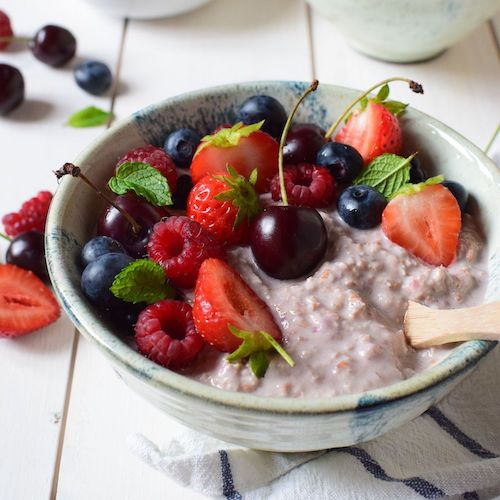

Colazioni nel mondo
Svizzera
birchermüesli
miscela di avena con frutta e noci in stile
muesli che di solito viene servita su yogurt denso.

Germania
frühstück
servita a buffet, si compone di salsicce, affettati, formaggi, pane e pretzel, frutta fresca, uova alla coque e la marmellata fatta in casa.
Costa Rica
gallo pinto
riso e fagioli saltati in padella aromatizzati con peperoncino,
coriandolo, cipolla e qualche goccia di salsa tipica del paese e
si serve accanto a uova, avocado, formaggio